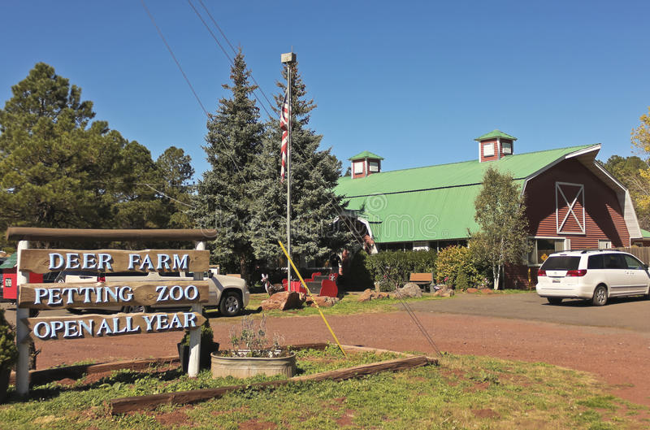
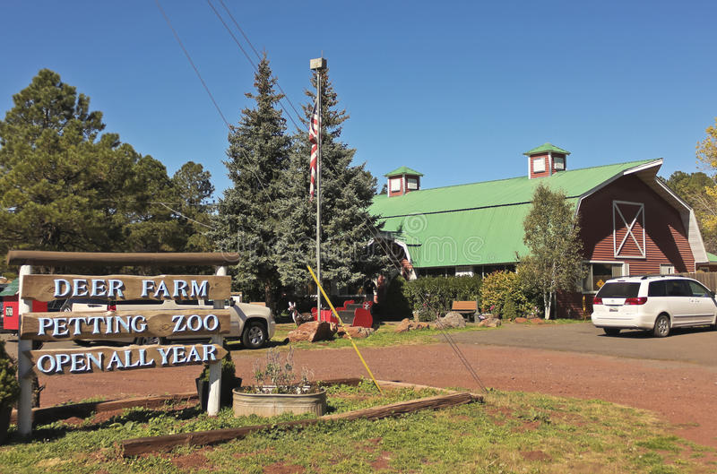
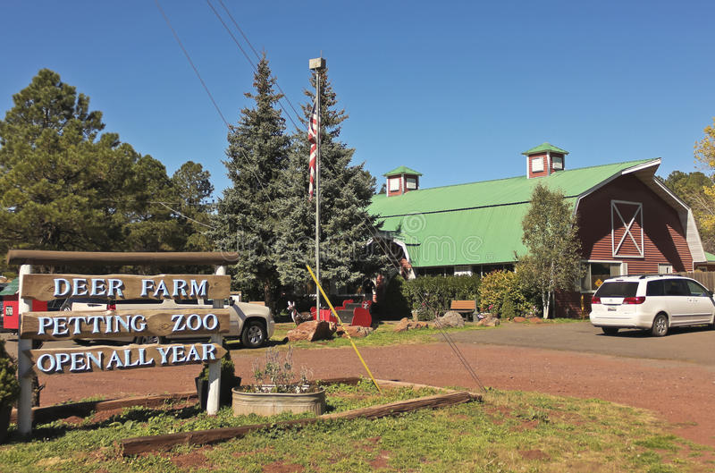
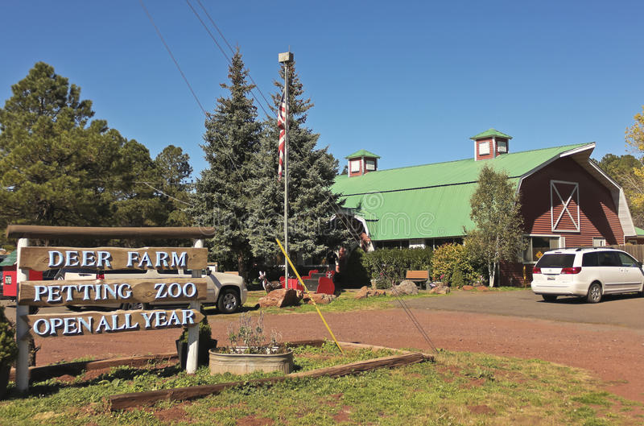
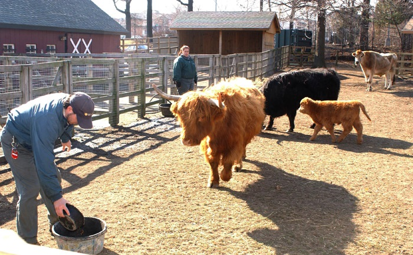
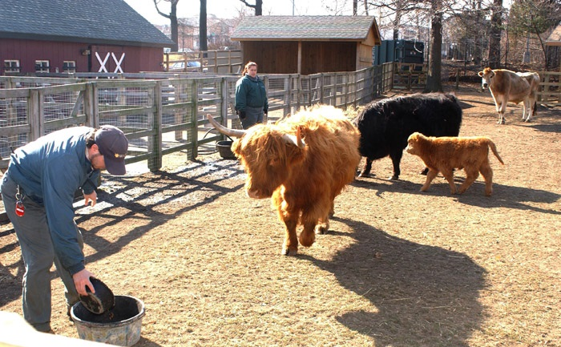

We have a whole host of animals large and small, waiting to meet you!
At Farmyard Friends you will be greeted by our friendly kune kune pigs who love to see you, along with our curious rhea who likes to keep an eye on everyone.
Over in the Nursery it’s a feeding frenzy of fun loving goats. Further along you will find baby chicks and sometimes newly hatched ducklings. And don’t forget to visit our goats Ralph and Grumpy Greg!
Next stop is our specially glazed breeding unit where you can see piglets feeding from their mothers. This is often a highlight for the whole family to experience together especially if you are lucky enough to see piglets being born.
Our bunnies and guinea pigs can be found in their own compound, often with babies cuddled up together. We have regular petting sessions so keeps an eye out for the daily events board!
And if meeting all these wonderful animals isn’t enough, we have some very chatty birds in our avery, along with spacious paddocks that are home to a variety of cows, sheep and Shetland ponies.
We pride ourselves on being able to offer a unique experience which allows your child to learn about modern farming and interact with animals in a safe and fun environment. For the welfare of all our animals we do have feeding notices around the park, so please make sure you adhere to them.

 


| Monday | 10:00 | - | 18:00 |
| Tuesday | 10:00 | - | 18:00 |
| Wednesday | 10:00 | - | 18:00 |
| Thursday | 10:00 | - | 20:00 |
| Friday | 10:00 | - | 18:00 |
| Saturday | 10:00 | - | 18:00 |
| Sunday | 11:00 | - | 16:00 |